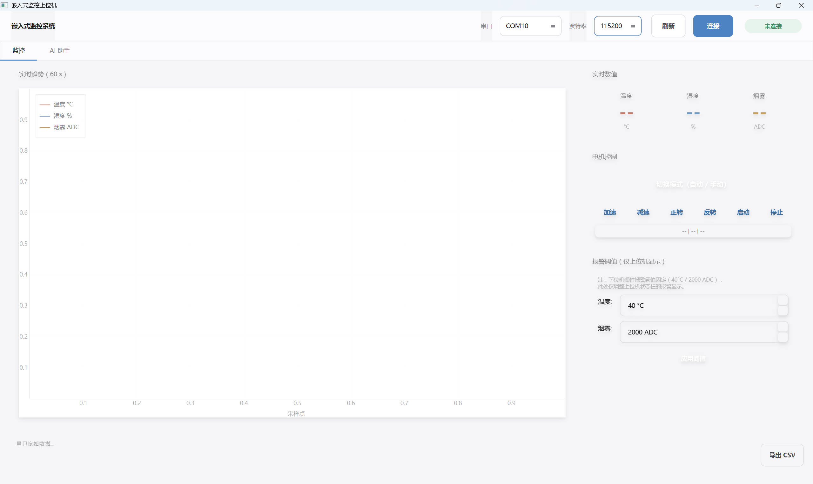
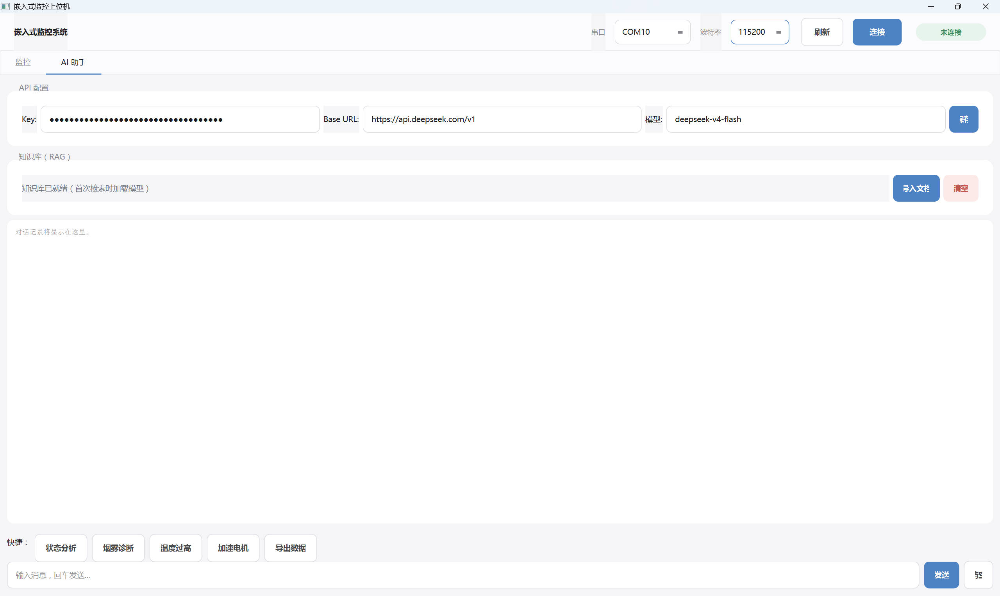

将实时设备状态、知识检索和用户确认的控制流程整合到一套系统中，让产线运维既能看到数据，也能问得明白、改得安心。
产线设备的温湿度、烟雾等状态需要实时监控和及时响应，但传统上位机只能看数值、不会"解释"——出现异常时，运维人员仍要自己判断原因、查手册、决定怎么操作。
用 STM32 采集温度、湿度、烟雾浓度并通过串口上报，PyQt6 上位机实时绘制趋势曲线、提供电机启停与阈值设置；在监控面板之外接入 RAG 知识库 + DeepSeek 对话助手，让系统能基于设备状态和本地知识库回答"状态分析""烟雾诊断"之类的问题，并在用户确认后下发控制指令。
STM32 固件完成温湿度、烟雾采集与电机控制；PyQt6 上位机实现实时曲线、报警阈值设置和 CSV 数据导出；AI 助手接入 DeepSeek API 并挂载本地知识库，支持文档录入和一键诊断类快捷指令，控制指令仍需用户主动触发，保留人工确认环节。
115200
串口波特率
RAG
本地知识库检索辅助问答
CSV
监控数据可导出
人工确认
控制指令需用户主动触发

